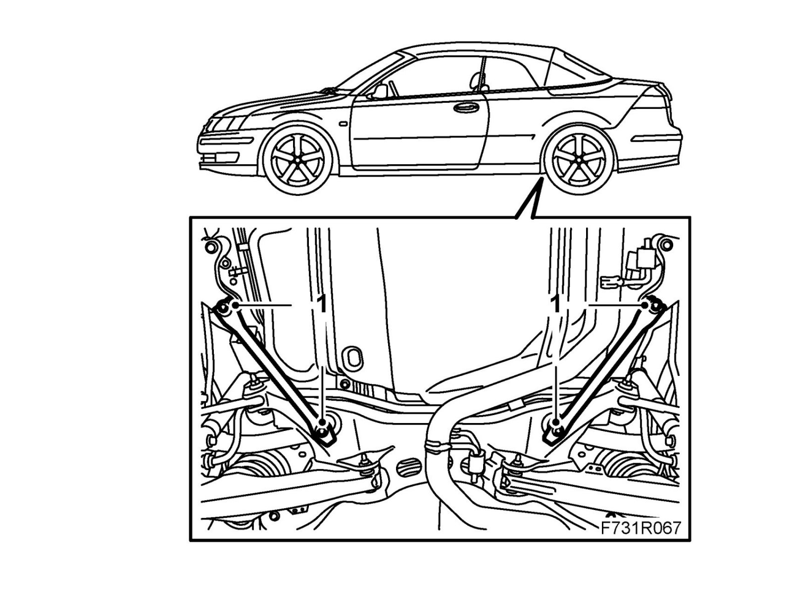

Chassis Reinforcement, Rear Subframe, CV
Chassis reinforcement, rear subframe, CVTo remove
1. Raise the car.
2. Remove the bolts holding the LH and RH rear chassis reinforcements. Remove the reinforcements.
To fit
1. Position both the RH and LH rear chassis reinforcements and loosely screw in the bolts.

2. Tighten the front bolts on the LH and RH rear chassis reinforcements.
Tightening torque 110 Nm (81 lbf ft)
3. Tighten the rear bolts on the LH and RH rear chassis reinforcements.
Tightening torque 75 Nm + 135° (55 lbf ft +135°)
4. Lower the car to the floor.